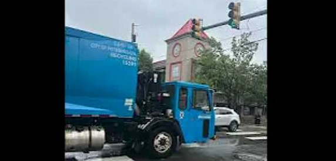
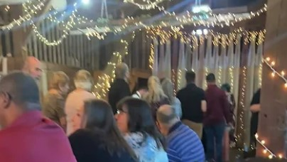
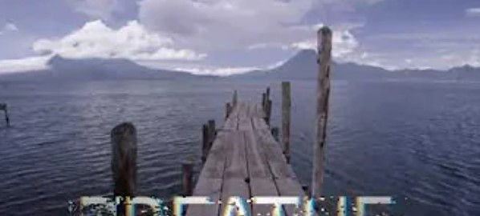
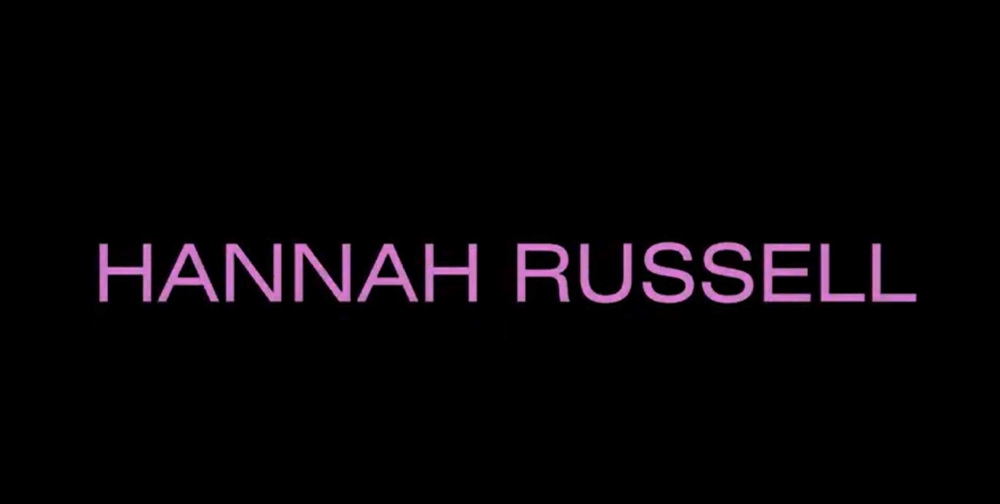
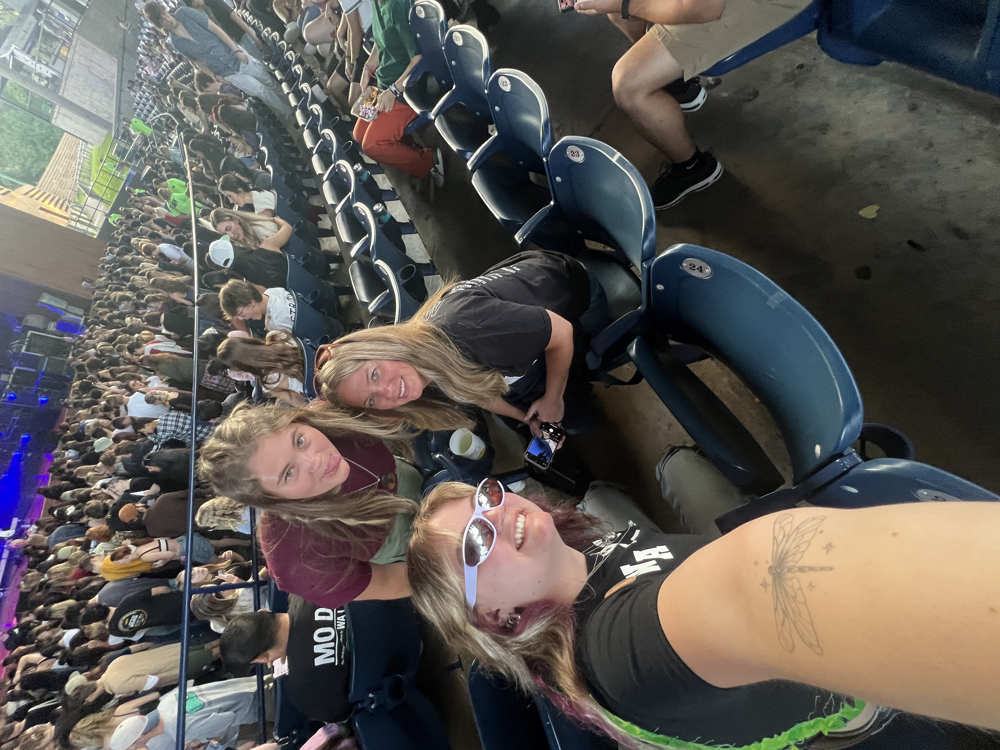

Phase 2/3: Expository Documentaries and Animation Effects
Photo Essay

Shows a glimpse into Hazelwood and my experience with the media and pollution.
B-Roll Challenge

Experimented with video making and put together a wedding montage.
The Interview
Interviewed my boyfriend about pollution and how to end it on a small and large scale.
Special Effects

Played around with special effects and made a video that shows the earth and that you need to breathe it all in before it is gone.
Adobe Animation

Animation of my name to figure out text movement.
Character Creator
A character that I made that represents a piece of plastic and will be used for my final project.
Phase 2/3 Course Goals
1. Foster the creative habits of mind
Through these last six projects I have found myself to feel more creative when making them. Without having to learn a whole language or program, I found it easier to be more creative with things I am more familiar with. Previously, I have taken photography classes, so I was very comfotable with the photo essay assignment. Through the photo essay assignment I realized I was taking pictures for another class, but these are what I took pictures of for a completely different assignment. I realized these were raw photos that all show the journey of this neighborhood and they all revolve around pollution.
2. Engage with others in a workshop environment
I feel as though through the beginning of class workshops and the end of class workshops I have interacted with other classmates that do not sit around me that have helped me a lot. I have realized that I have a similar project to one other classmate and completely different projects to everyone else. Everone elses projects have given me inspiration for mine.
3. Think deeply about craft
When thinking about craft and how these projects have changed or insired that I think that they have all helped me for my final project. I have learned how to add pictures and videos into one video with sound. I have learned how to animate and make characters my own. With all of this information I will be able to craft my final project for the class.
4. Engage in sustained research and skills development.
This section of the class has definitely prepared me for the final project through intense research. Four weeks of research, looking at three sources each week have taught me how to research and realize what is important to the topic. I have learned through these past six projects the skills of premiere pro, after effects in premiere pro, and adobe character creation.
5. Learn to present your work
These projects have given me the tools needed for me to present my final works for the class. Like I have said previously I have just now learned these programs and they are going to help my final project work tremendously. I am going to present my final through adobe character creator and through premiere pro put my videos together. I will aso be using vs code and HTML to form my final presentation.

generated by Pitt Fuego
“Why make a spark when you can light a fire?